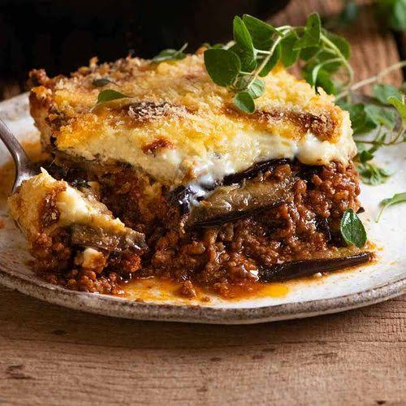

Mousakka
To go back to the Index, Click Here

Mousakka
A deeply comforting and hearty casserole that is a cornerstone of Greek cuisine. It features distinct layers of tender roasted eggplant, a richly spiced, tomato-based meat sauce, and a thick, golden crown of creamy béchamel sauce.
Ingredients
- 2 large eggplants (sliced lengthwise)
- 500g ground beef or lamb
- 1 large onion (chopped)
- 2 cloves garlic (minced)
- 400g crushed tomatoes
- 1/2 tsp ground cinnamon
- 4 tbsp butter and 4 tbsp all-purpose flour
- 2 cups whole milk
- 1/2 cup grated Parmesan or Kefalotyri cheese
- Pinch of nutmeg
Steps
- Brush the eggplant slices with olive oil, roast them in a 200°C (400°F) oven until soft, and set them aside.
- In a skillet, brown the ground meat along with the chopped onions and garlic.
- Stir in the crushed tomatoes and ground cinnamon, then simmer for 20 minutes until the sauce is thick.
- In a separate saucepan, melt the butter, whisk in the flour to form a paste, and gradually whisk in the milk until a thick béchamel sauce forms.
- Remove the béchamel from the heat and stir in the grated cheese and nutmeg.
- In a deep baking dish, arrange a layer of roasted eggplant followed by an even layer of the meat sauce, repeating until all ingredients are used.
- Pour the béchamel sauce over the top layer and spread it evenly.
- Bake at 180°C (350°F) for 45 minutes until the top is bubbling and deep golden brown.